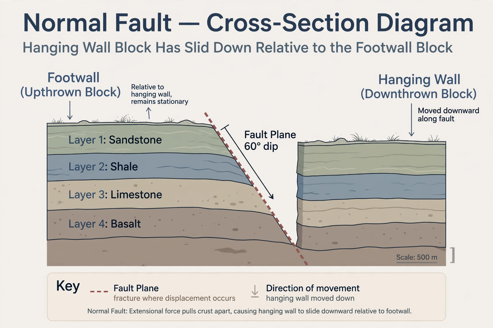

From Wikipedia, the free encyclopedia

In geology, a fault is a planar fracture or discontinuity in a volume of rock across which there has been significant displacement as a result of rock-mass movements. Large faults within the Earth's crust result from the action of plate tectonic forces, with the largest forming the boundaries between plates. Energy release associated with rapid movement along active faults is the cause of most earthquakes.
A fault plane is the surface along which slipping occurs. The block of rock lying above an inclined fault plane is the hanging wall, and the block below it is the footwall. The direction in which the plane descends into the Earth is its dip, and the line of its intersection with the surface is its strike. Fault zones may contain crushed rock such as breccia and fault gouge, and polished, striated surfaces called slickensides record the direction of past slip.
In a normal fault, the hanging wall moves downward relative to the footwall, as a result of extensional (pulling-apart) forces; normal faults dominate in regions such as the Basin and Range of the western United States. In a reverse fault, the hanging wall moves upward under compression; a low-angle reverse fault is called a thrust fault, and thrust faults are characteristic of mountain-building orogenies such as the Himalayas.
In a strike-slip fault, the two blocks slide horizontally past one another. If the far block moves to the right, the fault is right-lateral (dextral); if to the left, left-lateral (sinistral). Famous examples include the San Andreas Fault in California and the North Anatolian Fault in Turkey. Faults combining dip-slip and strike-slip motion are termed oblique-slip faults.
Most faults are locked by friction for long periods while tectonic stress accumulates, then slip suddenly in an earthquake when the stress exceeds the frictional resistance — the elastic rebound theory proposed by H. F. Reid after the 1906 San Francisco earthquake. Fault length and displaced area largely determine the maximum magnitude of the earthquakes a fault can produce.